Set 1 · OLX, second-hand, all inside greater Lisbon
Every seller is in Lisbon city or the first ring (Oeiras, Amadora, Loures south). Nothing from Cascais, Sintra, Mafra or Loures north. Solid cards are the main pick, dashed cards are alternatives in the same style.
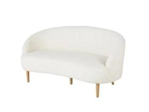
Maisons du Monde "Spy" 2/3-seat, bouclé, beech legs
€329Closest to picture 2. Legs unscrew for the attic stairs. Width not stated; the plan assumes 180 cm. Must be under 210.
Open on OLX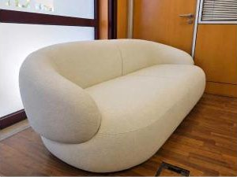
Curved bouclé 2-seat + matching armchair
€655 for both, sofa alone €525Buy the pair and the armchair question is solved. One solid piece, so measure the stairwell first.
Open on OLX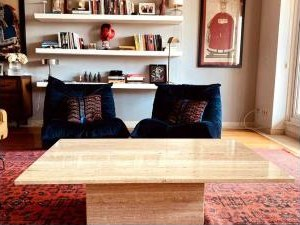
Natural travertine, 120 × 80 × 35 cm
€800The stone block from picture 2. Heavy: ask the weight and whether top and base separate. Five months listed, offer less.
Open on OLX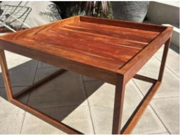
Area Store solid oak, Danish design, 80 × 80 × 38 cm
€130The pale wood from picture 1. Takes €670 off the set.
Open on OLX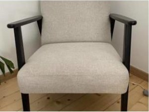
Black wood frame, beige fabric, Nordic mid-century style
€150Dark frame against the cream sofa, like the brown chair in picture 2. Size not stated; plan assumes 70 × 75.
Open on OLX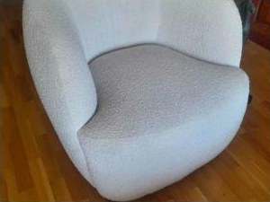
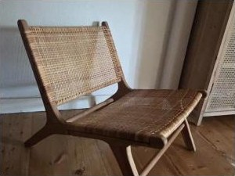
Rattan lounge chair, wood frame (photo shows a pair)
€100Closest to the wood-and-sheepskin chair in picture 2. Ask if the price is per chair.
Open on OLX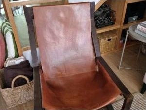
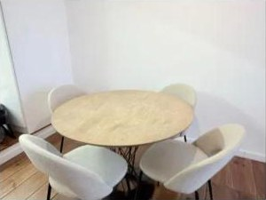
Oak table, black iron base, with 4 bouclé chairs
€500Whole set in one pickup. Ask the diameter; the plan assumes 110.
Open on OLX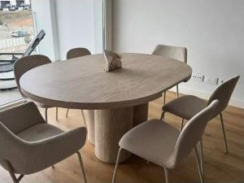
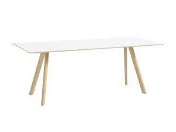
HAY CPH30 2.0, 200 × 90 cm, oak base, white top
€500The one piece that holds value. Big for the alcove, but it doubles as a desk.
Open on OLX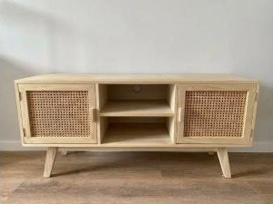
Sklum wood and rattan cannage TV stand, 120 × 38 × 55 cm
€115Fits the south wall under a wall-mounted TV with room either side.
Open on OLX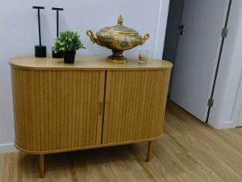
Fluted oak sideboard, sliding doors, 160 × 40 × 80 cm
€300Taller than a TV bench. Works if the TV hangs on the wall.
Open on OLX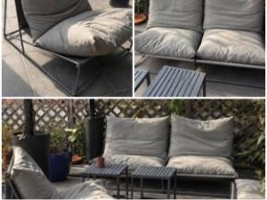
Sklum Amaro 2-seat sofa + armchair, grey, powder-coated steel
€230Modular and light. Size not stated; plan assumes 140 × 75 and 75 × 75.
Open on OLX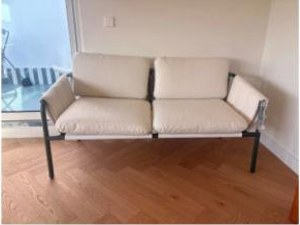
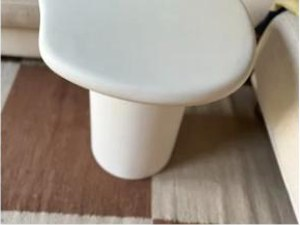
Kave Home Macarella microcement side table, 48 × 47 × 46 cm
€100The stone note again, outside.
Open on OLX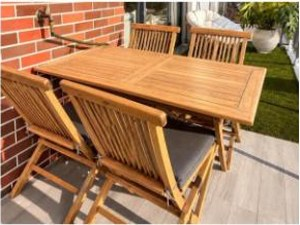
Wood folding table + 4 folding chairs with cushions
€80Two chairs out, two folded in the roof store. Size not stated; plan assumes 110 × 70.
Open on OLX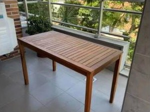
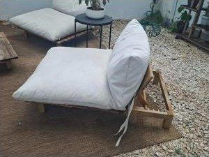
Main picks: €329 + €800 + €150 + €500 + €115 + €230 + €100 + €80 = €2,304. With the oak coffee table instead of travertine: €1,634.
Eight sellers, two of them in Oeiras. Five list no size (sofa, armchair, dining table, terrace sofa, terrace table); the floor plan below marks those in orange and they need a measurement before paying.
Set 2 · ikea.pt, STOCKHOLM 2025 range
IKEA's top range this year. Oak veneer, linen, rattan, glass. Terrace pieces are NÄMMARÖ (acacia) with a matching HÅKANSKÄR coffee table. All prices from ikea.pt on 30 Oct 2026.
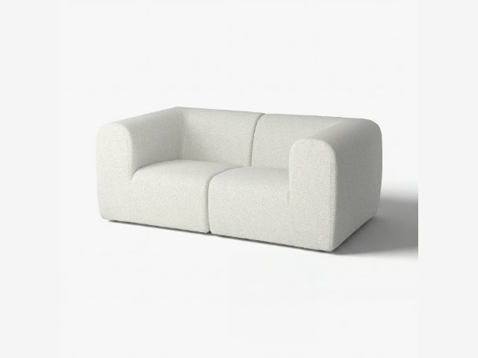
STOCKHOLM 2025 2-seat sofa, Djurmo grey/white
€999Off-white, boxy, soft. Two modules, so it goes up the stairs. Fits the TV wall with room to spare.
Open on ikea.pt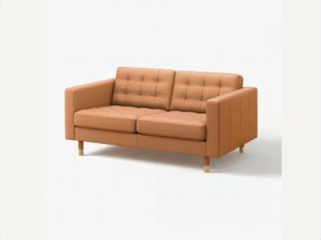
LANDSKRONA 2-seat sofa, Grann/Bomstad golden-brown leather, wood legs
€769Tan leather on the seat, back and arm faces, coated fabric on the sides. 14 cm narrower than the Stockholm, so more floor around it. €230 cheaper.
Open on ikea.pt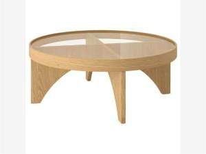
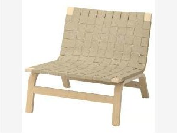
STOCKHOLM 2025 easy chair, birch veneer, woven linen
€299Low and light, the same idea as the sling chair in picture 2.
Open on ikea.pt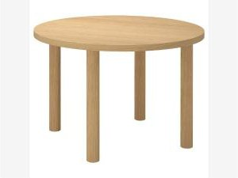
STOCKHOLM 2025 round table, oak veneer
€399Right size for the kitchen alcove. The 230 cm version is €599 for a desk-table.
Open on ikea.pt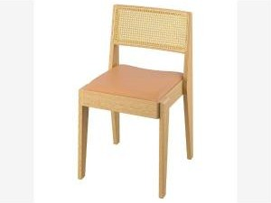
STOCKHOLM 2025 chair, oak, rattan back, leather seat
€169 each · 3 chairs €507Two at the kitchen table, one at the desk in the guest room. Full-grain leather and solid oak. The €229 dark brown version ties in better with the walnut benches.
Open on ikea.pt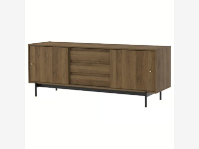
RÅDMANSÖ TV bench, walnut effect
€199Same series and finish as the DJ bench, with the same black legs and brass knobs. Fits the 185 cm south wall with 9 cm spare. €150 less than the oak one it replaces.
Open on ikea.pt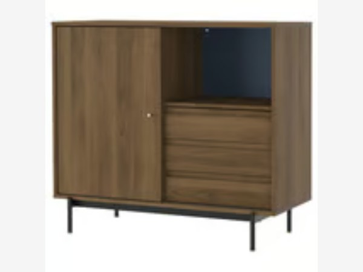
RÅDMANSÖ cabinet, walnut effect
€199Fits my 95 to 120 cm brief at 103. Two decks plus a mixer need about 100 cm, so it is just wide enough. Chipboard top; keep it under 15 kg.
Open on ikea.pt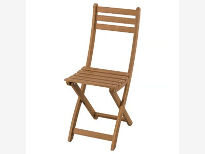
ASKHOLMEN folding chair, dark brown acacia
€30 each · 2 chairs €60One on each bedroom balcony for morning coffee. They fold flat, so they come in to the table on the few nights with four at dinner.
Open on ikea.pt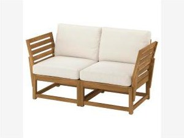
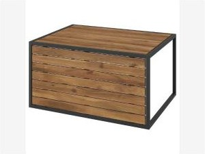
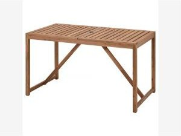
NÄMMARÖ table, outdoor, acacia
€119The 75 × 63 cm version is €69.99 if space is tight.
Open on ikea.pt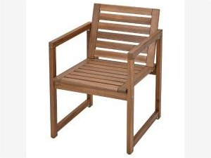
Indoor: €999 + €249 + €299 + €399 + €507 (3 chairs) + €199 TV bench + €199 DJ bench = €2,851. Terrace and balconies: €290 + €79 + €119 + €100 + €60 = €648. Total €3,499 before delivery. Seats for dinner: 3 STOCKHOLM chairs plus any of the 4 outdoor chairs.
Does it fit? The flat at true scale
Geometry from the architects' 1:100 vector drawing (±5 cm, confirmed with a tape measure on site). Every item is drawn at its listed size; orange dashed items are sizes the seller did not state. Layout follows my DJ-booth plan: sofa on the east wall, DJ bench out from the corridor wall so I face the room, TV on the south wall, table in the kitchen leg.
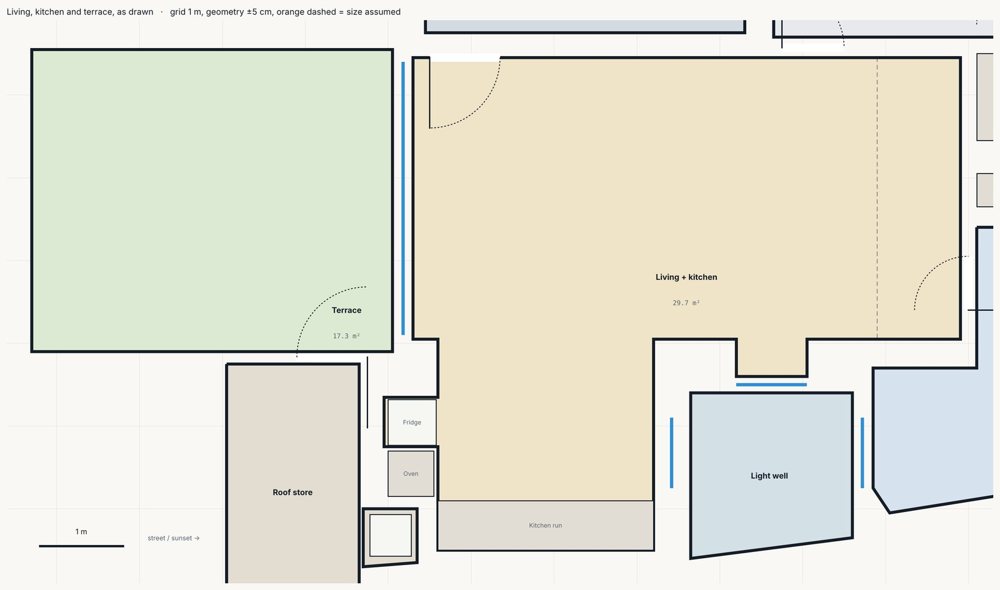
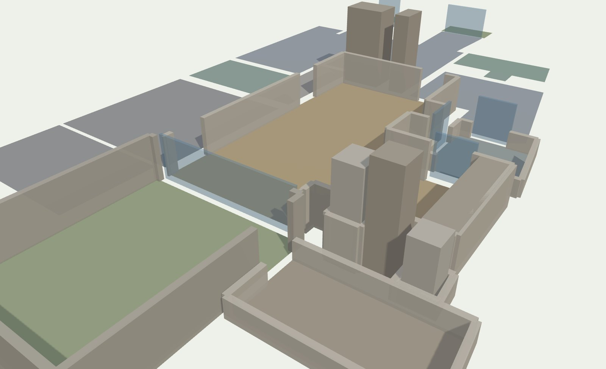
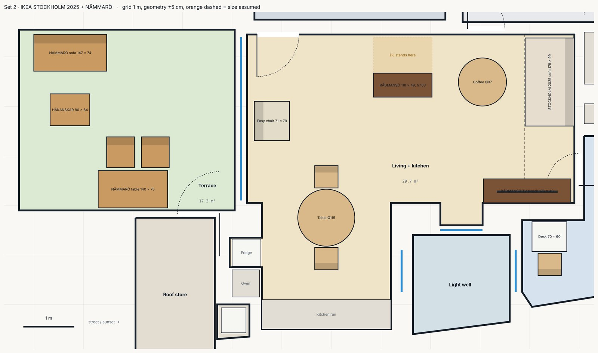
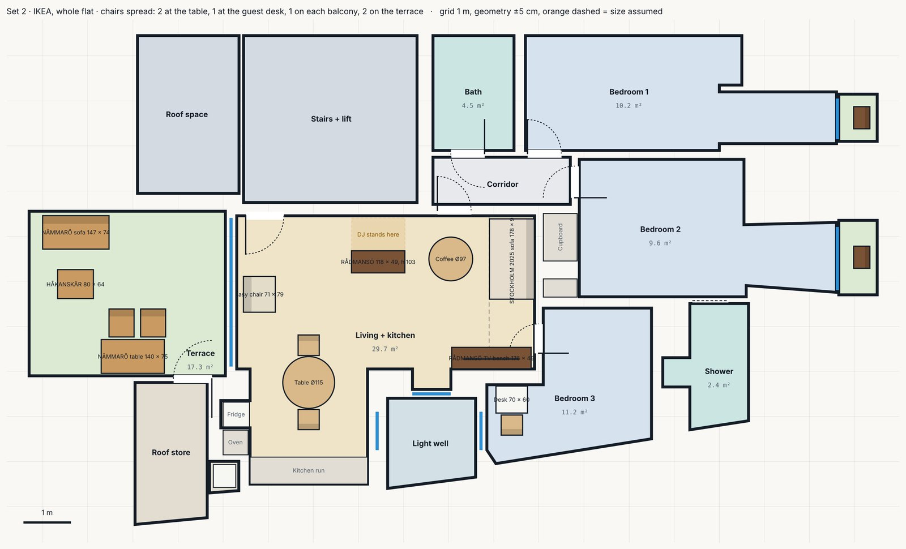
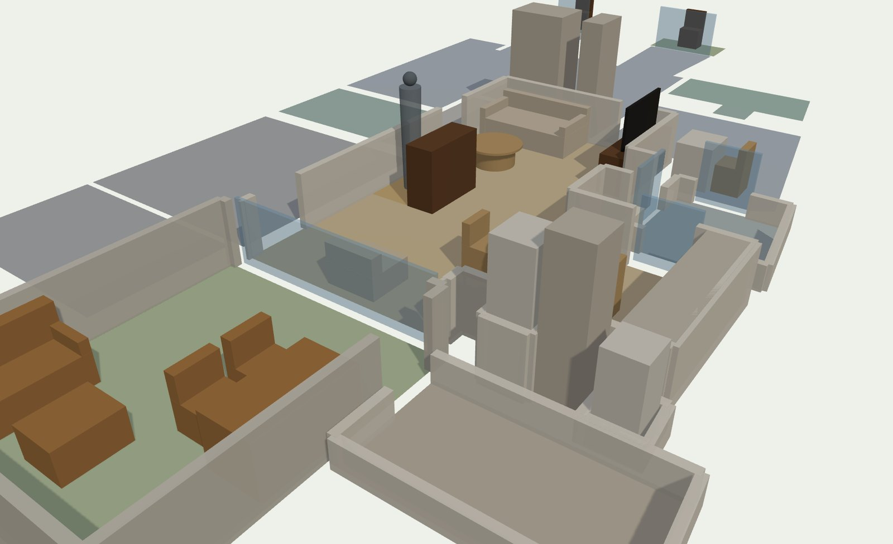
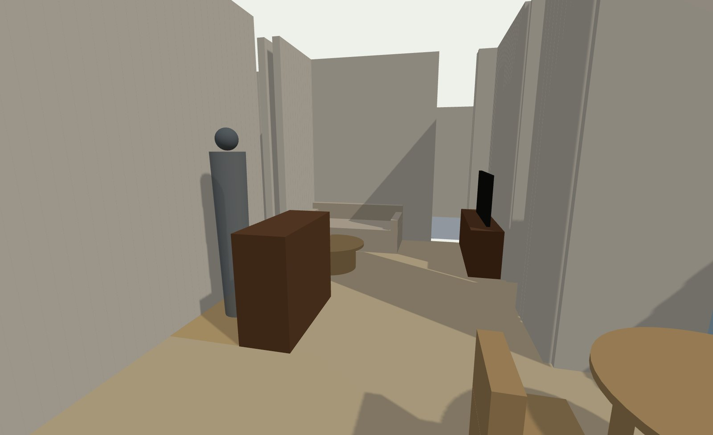
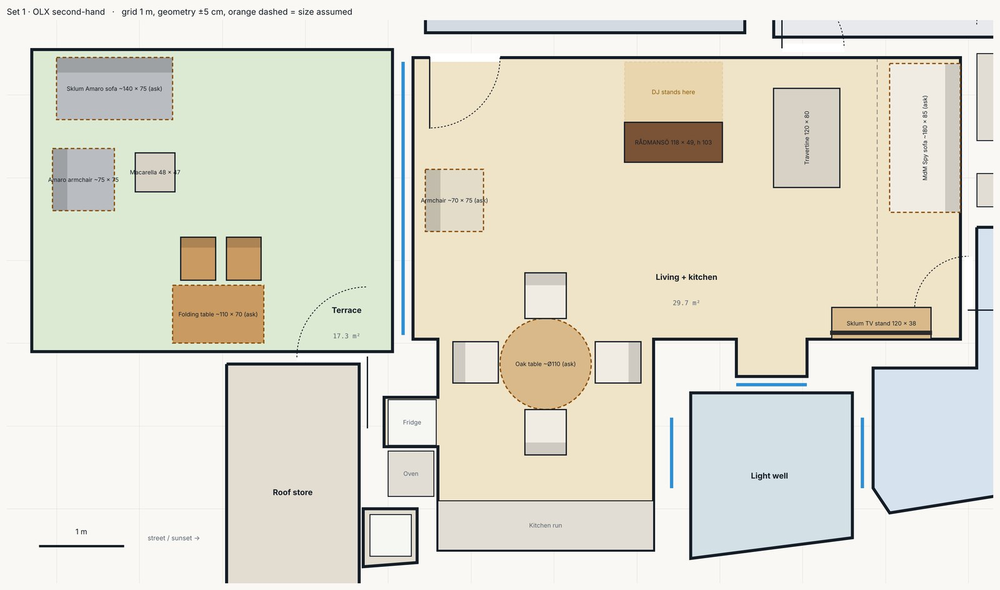
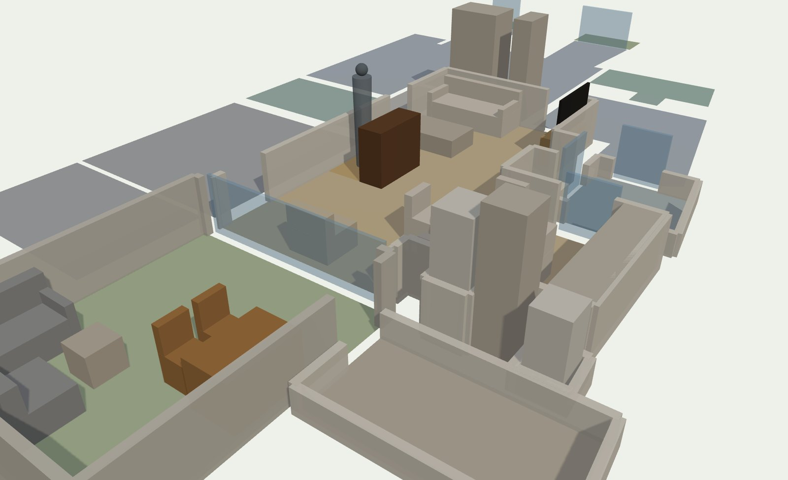
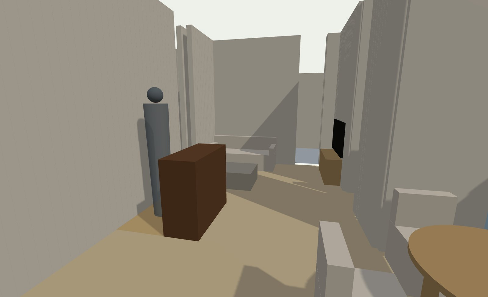
- DJ bench. RÅDMANSÖ is 118 wide, 49 deep, 103 high. Placed 73 cm out from the corridor wall I stand behind it facing the room, with the sofa 1.9 m away and the coffee table in between. Headroom there is about 3.1 m. At 193 cm my elbow is near 120 cm, so 103 is on the low side of comfortable; a 10 cm riser under the decks fixes it. My older plan used a 112 cm top.
- Sofa wall. East wall is 340 cm with the bedroom 3 door at the south end (95 to 160 cm from the south corner). A 178 cm sofa leaves 67 cm to the door swing. 210 cm is the limit, as before.
- Terrace. Sofa on the north wall, dining table on the south wall with two chairs facing the view, the 85 cm strip along the glass stays free for the sliding door.
- Attic. The DJ bench and the IKEA sofa are flat-pack or two modules. The travertine table and the OLX sofa are the two rigid pieces; both go up the stairs on edge.
How the two sets compare
- Price: €2,304 against €3,499 (IKEA includes the DJ bench, the matching TV bench and the balcony chairs). Drop the travertine for the oak table and OLX is €1,634.
- Effort: IKEA delivers to the door in one drop. The OLX set is eight sellers, all in Lisbon or Oeiras.
- Resale: neither holds value. The HAY CPH30 is the only item here that resells for what it cost.
- Look: the OLX set is closer to the reference look (bouclé, stone, bentwood). The IKEA set is more uniform and more oak.
- Mixing works: IKEA sofa and TV bench, then the OLX travertine table and bentwood chair for character.